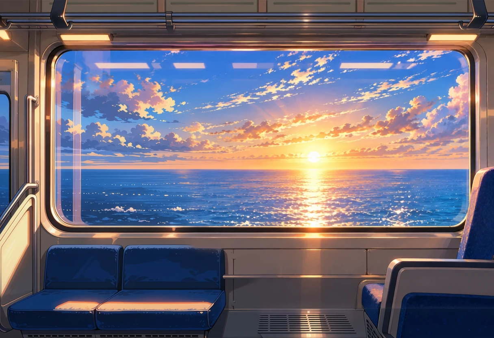
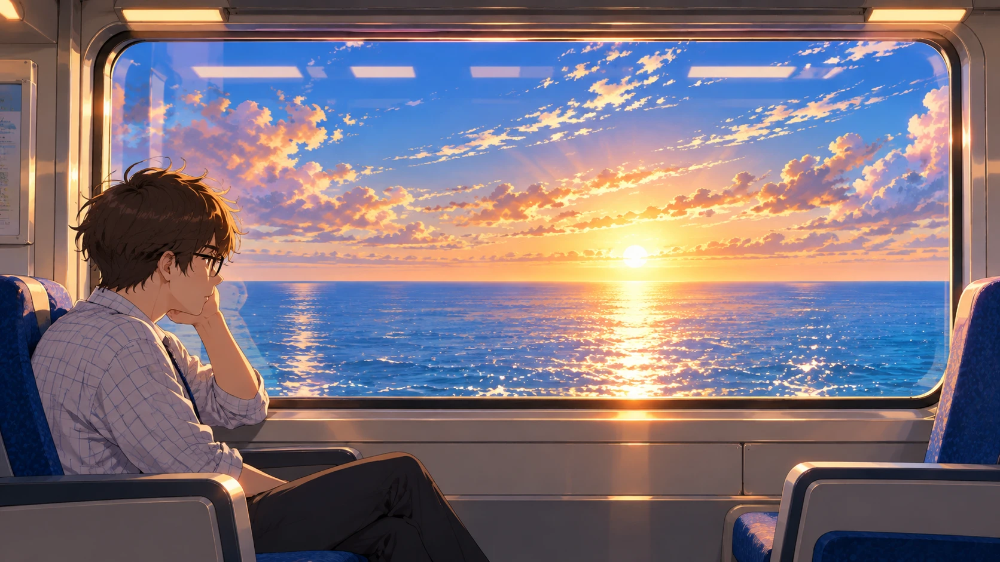
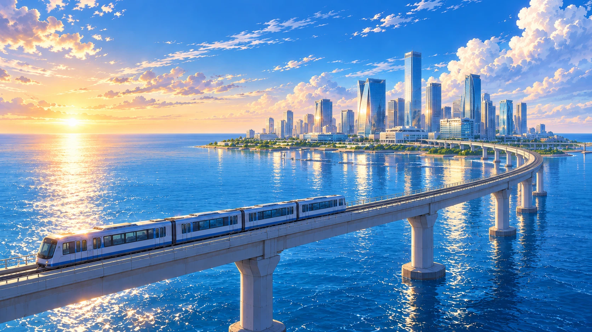

Monorail backgrounds
Inside is the side view only. Progress toward the island is shown from outside.

monorail-side-empty
Your interior with the man repainted as an empty seat and the edges extended to the game's background size (1216×832). For the monorail scene background.

interior-ref (your original)

bay-ref (your original)
The outside shot for progress toward the island.